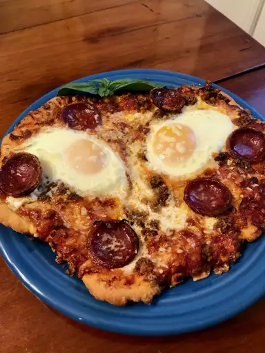

Sausage and Egg Pizza

A match made in heaven.
This might just be the ultimate stoner food, aside from how involved it is to make.
(I take no credit for this recipe--read the original by Carl Hanson and Chef John here.)
Ingredients
- 6 ounces hot Italian sausage, sliced
- 12 ounces unbaked pizza dough, room temp
- 2 tbsp cornmeal
- 3/4 cup pizza sauce
- 1 pinch red pepper flakes (optional)
- 6 ounces shredded Fontina cheese, divided
- 4 eggs
- freshly ground black pepper to taste
- 1/3 cup freshly shredded Parmigiano-Reggiano cheese, divided
- 1 cup baby arugula leaves, washed and dried
- 1 tbsp olive oil
Steps (as written by Carl Hanson)
- Prehead oven to 475 deg F (245 deg C).
- Cook and stir sliced Italian sausage in a skillet over medium heat until some of the fat has rendered out and sausage is no longer pink inside, about 5 minutes. Transfer sausage slices to a paper towel-lined plate to drain.
- Roll pizza dough out to about 12 inches in diameter and about 3/8-inch thick; sprinkle with cornmeal. Flip dough so the cornmeal side is down and transfer to a perforated 14-inch pizza pan.
- Spread pizza sauce in a thin layer on top of the dough. Sprinkle with red pepper flakes and about 3/4 the Fontina cheese. Spread sausage slices onto the pizza, leaving 4 spaces about 3 inches across on the pizza for eggs. Sprinkle remaining Fontina cheese onto sausage slices.
- Bake in the preheated oven until dough is hot, edges are starting to brown, and cheese has started to melt, 10 to 12 minutes.
- Crack each egg into a separate ramekin or small bowl. Remove pizza from oven and use a spatula to press the spaces between sausage slices flat. Gently pour an egg onto each space. Grind a little black pepper onto each egg yolk. Lightly sprinkle Parmigiano-Reggiano cheese over entire pizza.
- Return to oven and bake until eggs are set but yolks are still liquid, about 5 minutes, checking frequently to avoid overcooking eggs. Toss arugula leaves with olive oil in a bowl until coated. Remove pizza from oven, poke egg yolks with a fork, spread them around a little, and sprinkle arugula over the top of the pizza. Cut into 4 quarters, each with an egg, to serve.